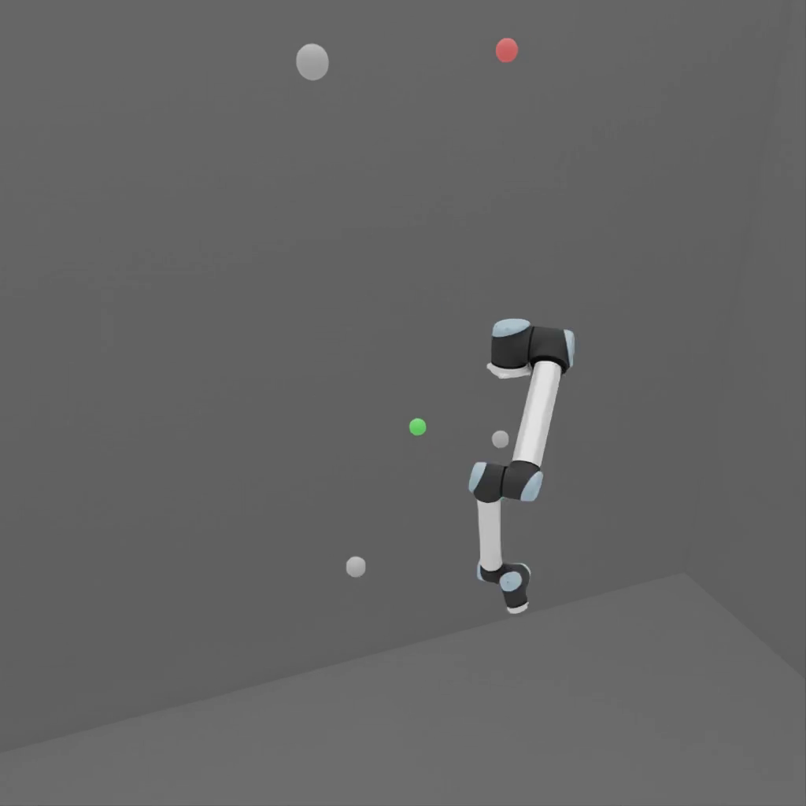

jacobian_ik (FET022 Driven Joints)#
Property |
Value |
|---|---|
Test name |
jacobian_ik |
Feature(s) |
|
Engine |
Kit / Isaac Sim (>=2024.2.0) |
Test version |
1.4.12 |
Wall-clock timeout |
2400 seconds |
Native Velocity Defaults#
A selected physical revolute joint’s native rad/s ceiling is unavailable as a timing hint when it matches the SDK float32-maximum degree/s default converted to radians/s, including float32 rounding. Ordinary authored ratings, linear coordinates and unknown units retain their values. Without a meaningful hint, the existing configured timing fallback applies; no physical ceiling is invented. This can change planned ramp duration without changing response tolerances or the required execution budget.
Nominal Initial Settling#
Before measuring the response, the phase requests complete ctx.step_one()
ticks for the configured initial settling interval, rounded up from
settle_seconds * physics_fps. Zero settling is allowed; FPS must be finite
and positive, and settling seconds finite and nonnegative. Invalid timing
configuration or failed ticks remain execution errors, not asset verdicts.
This is nominal requested tick time, not measured solver or wall-clock time;
render/capture work is separate. The processing-only ctx.physics_steps()
helper is not used to establish this interval.
Summary#
Solves a set of FK-sampled end-effector targets using an in-house damped least-squares Jacobian solver and verifies that the solver converges within the iteration budget and position tolerance.
Optional Motion Evidence#
Each successfully solved target records bounded per-joint histories during
interpolation and hold. Plots compare measured positions, actual issued targets
(for independently commanded DOFs), and signed tracking error. Passive,
mimic-follower and loop-owned DOFs record position only, without an invented
target or tracking error. Revolute readbacks use radians; unqualified prismatic tensor units remain
unknown_native. Metadata records stage scale and unit basis.
Times are target-local nominal step estimates; FK sampling, solver perturbations,
and rendering ticks are not included. No simulation steps or control changes are
introduced by observation.
These plots are joint-response diagnostics, not the final live end-effector position or solver orientation checks that determine the verdict. Successful capture markers reference preceding retained samples, not exact video frames. Video-disabled execution still samples motion. Optional extra readback/recording failure produces null/partial evidence without changing a valid result. Required joint and live Cartesian pose readbacks must be usable; unavailable or invalid state is a setup/runtime error. Older runners still execute normally.
Missing stage, unresolved live EE mapping, solver-construction exceptions and
internally empty generated targets are execution errors with NO VERDICT.
Only a positively established standalone gripper receives
standalone_gripper applicability evidence before its clean skip. Other
legacy prerequisite or coverage skips remain unmarked and supply NO VERDICT.
Required Runtime State#
Missing, non-finite or wrong-shaped runtime state needed by control or the verdict stops the test as a setup/runtime error, not conformance PASS or an evaluated asset-response FAIL. Optional extra motion readbacks remain nullable and can mark diagnostic evidence partial. Response criteria are unchanged; playback uses the velocity-aware schedule below. Bounded sampling and probe drive-target synchronization prevent unlimited SDK sentinel values or stale drive targets from corrupting setup.
Spatial Safety Observation#
The safety guard compares required finite live articulation geometry with a
frozen setup reach reference derived from owned body geometry, joint-anchor
offsets and bounded prismatic travel, when that topology can be qualified.
The configured volume-margin factor is applied as its cube root to this span;
ordinary bending from a slender initial pose is not judged against that pose’s
small volume. Unsupported topology retains an explicitly unqualified initial
volume proxy. jik_guard_reference records the basis and qualification;
jik_guard_abort retains a detected guard interruption when diagnostics
are available. Raw initial-box metrics remain observations, not the qualified
reach reference.
A guard trip interrupts execution as a runtime/setup error with incomplete response coverage, not an evaluated joint/target failure or an asset-defect diagnosis. Required geometry errors also propagate; optional diagnostic persistence cannot disable the guard or replace its original cause. Inspect completed observations/timing records where supplied, rather than assuming all planned motion ran. No extra physics steps or acceptance tolerances are introduced; native qualification of the reported asset remains separate.
What Pass Guarantees#
A pass meets the configured sampled fraction (min_pass_rate, default 0.40)
and existing target-diversity guard. Failed targets remain visible even in a
passing run. The criterion combines final live EE position error with solver
orientation error, not independently observed final live orientation. A pass
does not certify all targets, the workspace or global kinematic conditioning.
What It Checks#
The test samples num_targets (default 5) end-effector targets by performing
forward kinematics from random joint configurations. These FK-sampled targets are
derived from sampled FK configurations, not guaranteed to converge or succeed
during dynamic playback from another starting pose. The damped least-squares (DLS)
Jacobian solver is then run with bounded deterministic initial configurations for up to
max_solver_iterations (default 150) iterations per attempt with
damping_lambda (default 0.05). A target is considered reached if the final
end-effector position error is within position_tolerance (default 0.05 m) and
the solver orientation error is within orientation_tolerance_deg (default
10 degrees). Final live orientation is not independently rechecked.
The pass-rate denominator is the configured FK-sampled target set (default
five). The two additional radial diagnostic targets do not enter that fraction.
The test fails when the fraction of targets reached falls below min_pass_rate
(default 0.40). The test skips when no end effector can be discovered on the
articulation. The test does not apply to gripper-type robots.
How It Works#
The in-house DLS solver requires no Lula descriptor or URDF. Its numerical Jacobian uses live articulation-link poses after finite joint perturbations, not static authored USD transforms. Core routes to PhysX, with epsilon 1e-5 in native joint coordinates (radians for qualified revolute joints; no independent linear-unit qualification), one propagation step, a 0.67 s minimum interpolation and unchanged 0.3 s hold. Independently owned Newton behavior is documented in the Newton runtime guide.
Playback schedules the complete accepted move from its live starting pose using
the slowest independently commanded coordinate’s usable velocity hint and profile
peak speed. The existing local segment policy is exposed and consumed:
sweep_speed_scale=0.8, sweep_settling_allowance_seconds=0.25,
max_sweep_segment_seconds=60.0. Missing/invalid optional ceilings retain the
configured minimum; present getter failures and invalid required positions remain
errors. Runtime distance/velocity share coordinates; selected USD angular hints
convert degrees/s to radians/s. Linear USD hints retain the owning tier’s existing
qualification, never a guessed conversion. Excluded passive/follower/loop/held
coordinates neither pace the segment nor acquire independent commands.
Per-target scheduled_interpolation_frames and scheduled_interpolation_seconds
describe nominal scheduled ticks, not measured elapsed simulation or wall time.
The integer frame count is retained without a seconds round-trip truncation.
An over-budget complete segment raises a JIK execution error. Any required
target operation failure or cancellation, including initial/subsequent reads,
commands, ticks, holds and final EE observation, attempts to publish earlier
jik_per_target rows, jik_playback_completion=incomplete and the interrupted
target index before propagating the original cause. The interrupted target has
no fabricated verdict. Secondary observer cleanup and independent metric
publication attempts cannot replace that cause; failed storage is unavailable
evidence, not guaranteed persistence. A budget error never truncates motion
into an asset FAIL.
Search, targets, pass criteria and outer/search deadlines are unchanged.
Final metric fields publish independently of the local aggregate and required
gate. Ordinary diagnostic sink failures cannot turn a measured FAIL into PASS
or stop that gate. Producer None omits media; unknown capture/encoding engine
errors, unsafe evidence paths and user/process cancellation remain errors.
This pacing-only procedure does not implement passive projection, global paused
timeline search or arbitrary probe overrides. A search failure before playback
is not fixed or proven fixed by extending the dynamic window. A combined
experimental pass without ablation and final native qualification cannot
attribute the cause or qualify a build.
Each DLS update can try at most eight bounded candidates, scaling the update
by 1, 1/2, through 1/128 and retaining the existing joint limits. A
candidate is accepted only when the solver’s combined position/quaternion-vector
squared error decreases. That numeric merit is a search heuristic, not a
physical quality score or a replacement for the separate position/orientation
acceptance tolerances. Every candidate uses the existing live propagation
operation and counts toward the bounded search; recording adds no probe ticks.
When no candidate improves, that seed returns finite nonconvergence for the
existing seed-retry policy. The best candidate uses the same combined merit.
Its final restoration is followed by actual end-effector readback; returned
errors and success describe that observed pose, not a stale earlier iterate.
The probe epsilon, target set, joint limits and acceptance thresholds remain
unchanged. Host regressions qualify these numerical boundaries, not any
unavailable native robot asset.
Passive, resolved mimic-follower and closed-loop DOFs are excluded from independent FK sampling, Jacobian columns, teleports, drive targets and velocity writes. PhysX uses public indexed APIs and leaves those controls untouched; it does not disable constraints or asset self-collisions. Complete live state is still required. A coupled articulation whose adapter cannot provide genuine indexed control reports a setup/runtime error before these probes, never a full-vector fallback or an asset failure.
Each unchanged target first uses the previous successful solution. On explicit
finite nonconvergence only, the search can additionally try the current state,
the first failed solver’s finite best configuration, and home. Identical
independent-coordinate seeds are deduplicated; at most four attempts (600
iterations with defaults) are allowed. The generating FK answer is never used
as a shortcut. Targets, limits, tolerances and the live playback acceptance gate
stay unchanged. Errors, malformed results and cancellation stop immediately.
jik_seed_attempts retains up to 64 targets with at most 64 independent seed
coordinates per attempt; omission counts disclose additional diagnostics.
max_search_wall_seconds defaults to 1800 wall seconds, with an explicit maximum
of 1800. It must be a finite positive real number; booleans, strings and nonfinite
values are configuration errors before scene setup. This allowance starts at
the evaluated phase entry and includes initial settling, FK target sampling and
all solver attempts. It is checked before and after existing physics ticks,
progress boundaries and completed solver calls. It introduces no new ticks or
measurements and never grows automatically with machine speed. The seven default
targets still permit at most 4,200 solver iterations across four attempts each;
all diagnostic negative targets retain their solver search.
The registered whole-test ceiling is 2,400 seconds. Search completing at its maximum leaves at most 600 seconds gross for prior scene setup, subsequent playback, media and cleanup; setup time has already consumed part of that allowance. This is not a guarantee that every machine finishes. Synchronous native work cannot be forcibly interrupted by the local boundary check; the runner’s outer deadline still applies. An exhausted allowance is an incomplete execution error, not an asset FAIL or a correctly rejected negative target. Original native/readback errors and cancellation take precedence over a late clock check, and required reference-state restoration remains attempted.
Optional jik_search_timing records elapsed wall time, the fixed allowance,
requested/completed search ticks, started/completed attempts, completed
iterations, bounded last progress and stop reason. These are whole-operation
service measurements, not native solver CPU time or video/physics timestamps.
An interrupted attempt has no fabricated completed iteration count. Recording
failure does not change a valid verdict or replace the original execution error.
Position residuals have explicit provenance. The compatible
jik_max_position_error_m is the maximum of recorded solver or live-playback
residuals, labelled by
jik_position_error_basis = mixed_solver_or_live_playback_residual; it must
not be described as the worst observed playback error. The separate nullable
jik_max_live_playback_position_error_m covers only measured target playback,
and jik_live_playback_targets_observed counts those observations. With no
playback observations the nullable maximum is unknown, not zero. Per-target
rows retain solver_position_error_m and nullable playback_position_error_m.
Orientation residuals remain solver-pose observations, including radial
diagnostic targets, with orientation_error_basis = solver_pose_not_live_playback;
they are not final live-playback orientation measurements. These aggregate
diagnostics do not independently change target acceptance or its denominator.
Host regressions are not native robot qualification. Generate a fresh plan with this provider version to select its 2,400-second ceiling; a saved older plan can retain its earlier duration metadata.
Set ee_link_path to an explicit absolute marker or link under the loaded asset
when its intended identity is known; it takes precedence over inference. Invalid or
out-of-asset endpoints do not fall back silently. Otherwise the enabled composed
joint graph is preferred to isaac:physics:robotLinks (an inventory/order hint,
not an explicit TCP declaration). Inference requires a connected acyclic articulation
tree, a unique base and unique deepest non-finger chain endpoint. Enabled
constraints with physics:excludeFromArticulation = true can close a physical
loop without becoming tree edges; both endpoints must still resolve to bodies
in that tree. Unexcluded cycles and malformed or disconnected constraints
cannot establish an endpoint. World anchors support either USD
body relationship orientation. Disabled joints do not participate. Metadata or
articulation-order fallback is used only when no enabled joint graph exists.
Fixed tool-frame children are preferred only when they are not movable bodies.
Discovery and live measurement are distinct: when the runtime does not expose
the requested/discovered marker as an articulation link, the existing pose
resolver selects its nearest exposed rigid-body ancestor. Logs identify that
mapping and jik_ee_link records the link actually measured. This procedure
does not compose an unexposed marker’s fixed offset onto the live body pose;
an explicit flange/TCP marker therefore does not certify exact TCP-offset
motion or orientation. Review the measured link before interpreting its error
as an error at the intended tool point.
Required independently commanded DOFs need actual runtime limit evidence.
An available limit getter’s exception, malformed shape or invalid values
remain execution errors; they cannot become fabricated unlimited bounds.
If that accessor is absent, a supported real dof_properties limit readback
is required instead. Explicit correctly signed infinities retain their
unlimited meaning, distinct from unreadable state. Unknown bounds on excluded,
unwritten DOFs do not authorize independent commands or extra coverage.
Finite joint ranges retain their native stops. Correctly signed infinities and
float32-max SDK sentinels receive a bounded local excursion only for a uniquely
identified USD revolute joint, preserving finite one-sided stops. Unbounded
prismatic or unidentified joints remain at home for FK target samples and are
disclosed in jik_joints_without_safe_range; no linear units are guessed.
This is a target-sampling exclusion, not a frozen-DOF guarantee: nonlocked
DOFs can still participate in finite-difference probes, the native-coordinate
solver and solution playback under their reported limits. FK sampling
needs at least one nonlocked joint with a qualified nonzero excursion
(jik_sampled_joint_count); otherwise the test skips with insufficient coverage,
even for a single requested target. A home-only probe is not IK motion evidence.
Failure to observe distinct target positions does not by itself prove stale
state: kinematics, constraints, sampled configurations and setup also need review.
Finite-difference
and FK probes write matching position/drive targets and zero velocities before
existing physics steps. Probe/home restoration runs on success, error and
cancellation and retains the primary failure if restoration also fails.
Unavailable physics propagation is a runtime error, not a measured solver
nonconvergence or an asset failure. Clipped finite-difference perturbations use
their actual joint displacement; locked zero-displacement coordinates contribute
a zero column instead of dividing by a fictitious probe step.
Unexpected solver arithmetic/physics-step exceptions and malformed solver results also stop execution; they cannot become correctly rejected out-of-reach targets or PASS evidence. Only an explicit, well-formed solver rejection retains the sampled nonconvergence criterion. Preserve the original cause and reference-restoration evidence when diagnosing these execution errors.
FK targets are generated from sampled joint configurations, then the articulation is reset before solving/playback. At least two spatially distinct reachable targets are required when multiple configurations are requested to detect stale pose evidence. FK sampling does not guarantee later solver/playback success. Sampling, resets and solver perturbations are excluded from the motion clock.
The retained out_of_reach_factor and hemisphere_only configuration keys
are inactive for this procedure. Additional diagnostic targets use the existing
fixed multiplier of 1.4 times the maximum sampled base-to-endpoint distance
and always fold their direction into the upper hemisphere; overriding either
key does not change them. This radial heuristic does not prove global
unreachability. Inspect target records rather than treating the key as an
enforced workspace boundary.
Failure Cases#
Symptom |
Checks before attributing a cause |
|---|---|
Pass rate below configured minimum (default 40 percent) |
Separate solver/playback failures; inspect live FK/Jacobian, DOF/TCP mapping, imported controls/limits, units, coupling, base setup and playback budget |
Solver exceeds iteration budget |
Inspect pose/Jacobian updates, initial configuration, numerical settings and supported runtime behavior; timeout alone does not prove tight authored limits |
Search or whole-test wall allowance exhausted |
Inspect |
Test skipped |
Confirm end-effector discovery or standalone-gripper applicability; a skip supplies no IK evidence |
Internal live-link error |
Inspect runtime link/body mapping, initialized view, selected variant and importer/backend pose support before changing authoring |
How to Fix#
Separate solver from playback failures. Inspect live FK/Jacobian updates, DOF/ link mapping, EE/TCP, imported controls/limits, coupling, units, initial pose, base/gravity setup and playback budget. A failed criterion does not isolate tight limits, incorrect gains or an asset defect. Authored USD angular limits are degrees, not runtime radians; qualify linear tensor units separately.
Preserve the original plan and evidence. Do not widen limits, invent a TCP, raise ratings or relax criteria merely to pass. Repair/tuning is external to Evaluate and requires a verified cause.
Expected Result#

The robot attempts FK-sampled targets and plays back accepted solutions. Inspect solver status and live position/solver orientation errors. An overall pass may include failed targets: the default 0.40 fraction is not a majority guarantee.
Notes and Caveats#
This test is distinct from the ik_target_reach test. The ik_target_reach test uses the Lula solver (which requires a robot descriptor) and samples targets on a Fibonacci sphere. The jacobian_ik test uses the in-house DLS solver (no descriptor required) and samples targets by forward kinematics. The two tests provide complementary sampled evidence, not comprehensive certification of Lula descriptor quality, joint structure or workspace conditioning.
This test does not apply to authored standalone-gripper types or to
gripper-signalled articulations with at most one independent motion DOF after
passive, mimic-follower, and closed-loop exclusions. Gripper validation receipts
alone do not establish that topology: an arm with an attached gripper and
independent arm DOFs remains applicable. Unknown or ambiguous topology does not
justify silently skipping its IK phase. A standalone skip supplies no IK evidence.
Unauthored type inference for scene setup additionally requires positive gripper
signals and qualified one-leader authored joint topology before adding a base
pin; weak/passive arm joints are counted, not discarded. Scene setup exposes
robot_type_authored and robot_type_source in scene_info, logs that
source, and still checks native independent DOFs for inferred gripper types.